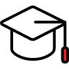
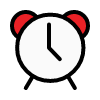
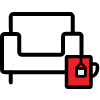
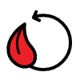

선택적 복리후생
자기 계발부터 문화생활까지 개인 목적에 따라
사용 가능한 현금성 복지 포인트를 年 180만원 지급합니다.

플레이디 아카데미
구성원들의 성장을 독려하고자, 매주 조직장들의 지식과 노하우를 전파하는 플레이디 아카데미를 운영하여 직무·리더십 교육·각종 매체 교육 등 다양한 교육 콘텐츠를 제공합니다.

도서 지원
업무 역량 강화와 직원들의 성장 도모를 목적으로 다양한 도서를 구비한 사내 북카페를 운영합니다.

시차출퇴근제
하루 8시간을 근무하되,
출퇴근 시간을 선택할 수 있는
근무제를 운영합니다.

통신비 지원
KT 통신사를 이용하는 임직원에 한 해 매월 통신비의 일부를 지원을 해드립니다.

외근/야근 택시비 지원
외근과 야근 발생 시 업무 택시를 지원하며
야근 시에는 석식비도 함께 지원합니다.

PS Day
매월 1회, 2시간 30분
늦게 출근하거나 일찍 퇴근하는
PS Day(Punch Stress)를 운영합니다.

사내 동호회
건전한 취미 생활과 친목 도모를 위한 사내
동호회를 운영하며 정기 활동비를 지원합니다.
여직원 휴게실
여직원들의 컨디션 회복을 위한 여성 휴게 공간을 별도 운영합니다.

리프레쉬 존
임직원들의 휴식과 충전의 시간을 위한 척추
관리용 의료기기 세라젬과, 전신 관리용 안마
의자를 구비한 리프레시 존을 운영합니다.
휴양 시설
소노 호텔&리조트를 플레이디 법인 회원가로 이용 가능합니다.

사내 카페
임직원들을 위한 사내 카페를 운영하며, 월 2만 원의 카페 이용 포인트를 지원합니다.
건강 검진
임직원들의 건강관리를 위해
매년 정기 종합 건강검진을 지원합니다.
독감 무료 접종
매년 독감 예방 접종을 무료로 받을 수 있도록 지원합니다.
단체 상해보험
임직원 단체 상해보험 가입 운영을 통해 실손 의료비를 지원합니다.

심리 상담 프로그램
임직원들을 위한 전문가 심리 상담 프로그램을 지원합니다.
멀티 자판기
사내 배치된 멀티 자판기를 통해 시중보다 저렴한 가격으로 각종 음료와 스낵류를 이용해 볼 수 있습니다.

Refresh 제도
열심히 일한 당신에게 드리는 혜택!
3년 근속 시 마다, 5일의 리프레쉬 휴가와 휴가비를 제공합니다.

명절 복지
임직원들이 편안한 귀성 길을 위해
명절 연휴 하루 전
1일 유급 휴가를 제공합니다.
경조사 지원
구성원들의 기쁨과 슬픔 모두 함께합니다.
임직원의 경조사 발생 시, 경조 화환 및 지원금과 유급 휴가를 지원합니다.